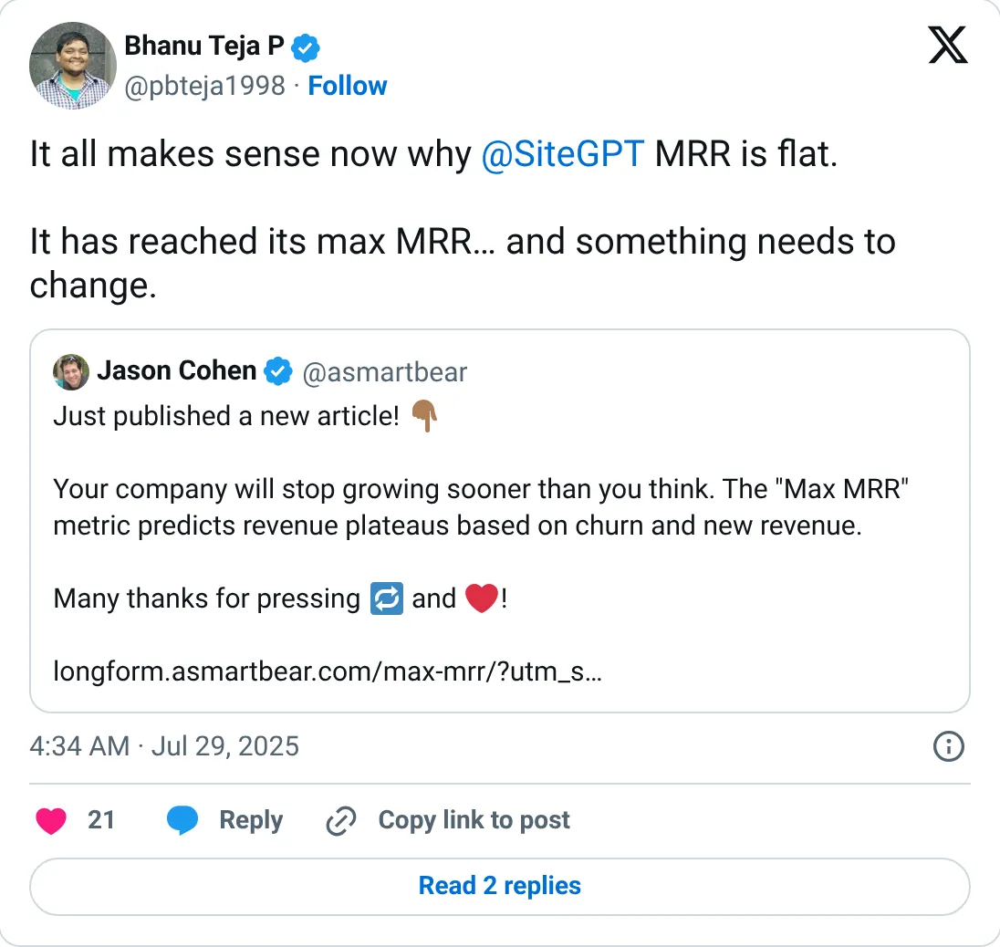
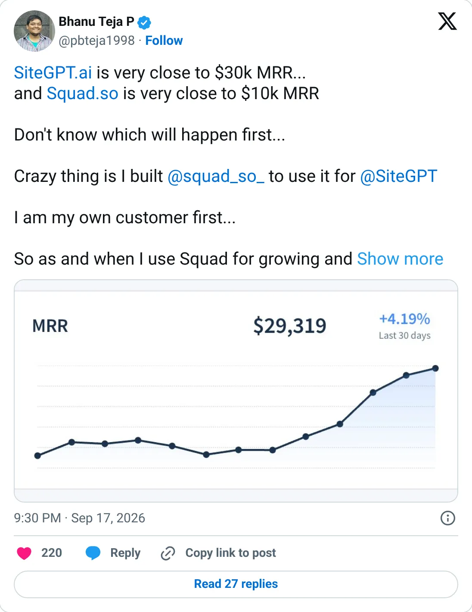

Not a pick
SiteGPT
The ledger looks real. It is not one of the clearer things to start next.
~$30K MRR
Should you build this
The money looks real, and it is still not a recommendation to start a copy. SiteGPT's posts are hedged and sequential: $10,183 in August 2025, almost $13K, $14K, $15K, $190K ARR after two flat years, then “very close to $30K MRR” on September 17, 2026. “Very close” is not how you write a number for a valuation. It is still self-reported, and support-chatbot MRR can be padded with annual plans. The voice of the updates is someone tracking a real, modest curve.
Cited from the captured posts, shown below: the earliest captured post (Jul 29, 2025); the latest milestone (Sep 17, 2026) is the source for “Very close to $30K MRR”.
Posts this is based on

Open on X

Very close to $30K MRR
Open on X
What the product is
Train an AI support chatbot on your website content in minutes, then embed it to answer customer questions.